Hojas de té
Té negro, verde, oolong, pouchong y tés aromáticos de Taiwán.
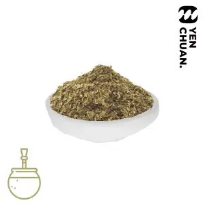
Yerba Mate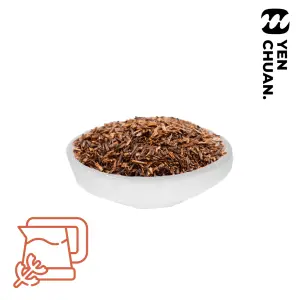
Rooibos tea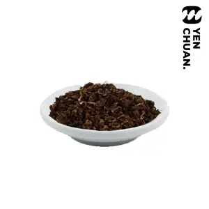
Tie Guan Yin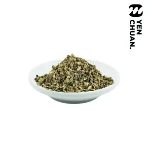
Li Shang green tea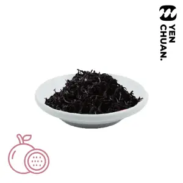
Passion fruit black tea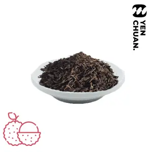
Lychee black tea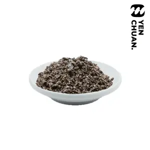
Oolong tea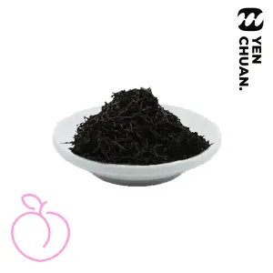
Peach black tea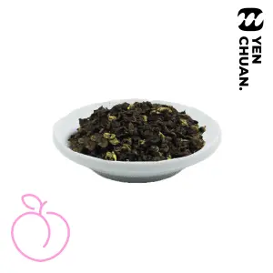
Peach oolong tea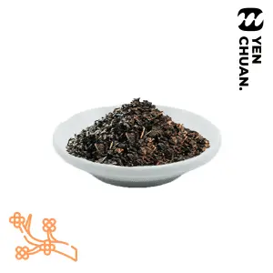
Osmanthus oolong tea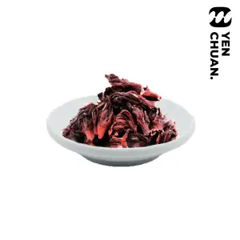
Roselle Tea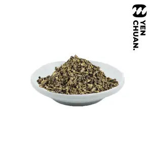
Mountain Pouchong Tea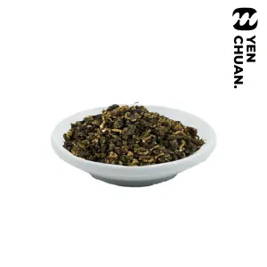
Four Seasons Tea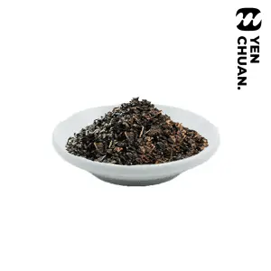
Roasted Oolong tea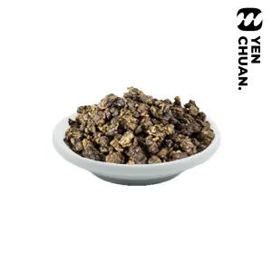
Donding Oolong Tea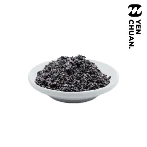
Japanese Style Roasted Oolong Tea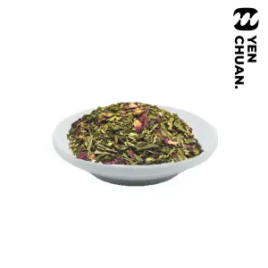
Rose Green Tea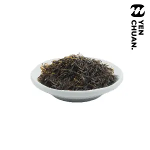
Jade Green Tea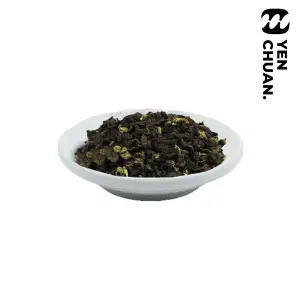
Oolong Green Tea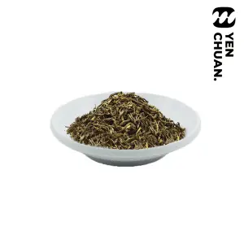
Jasmine Green Tea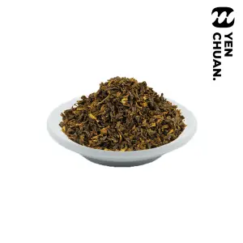
Pekoe Green Tea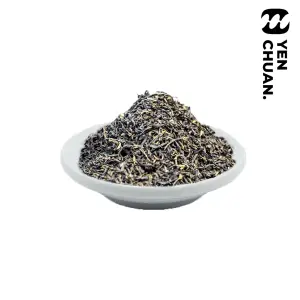
Traditional Black Tea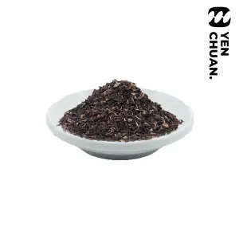
Black Tea for milk tea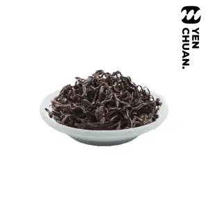
Taiwan Black Tea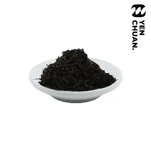
Earl Grey Black Tea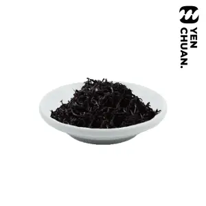
Sun Moon Lake Black Tea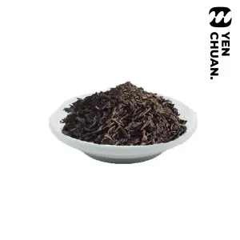
Ceylon Black Tea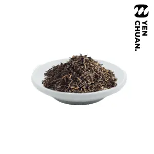
Assam Black TeaTraducción automática de demostración; los nombres de los productos se mantienen en inglés.